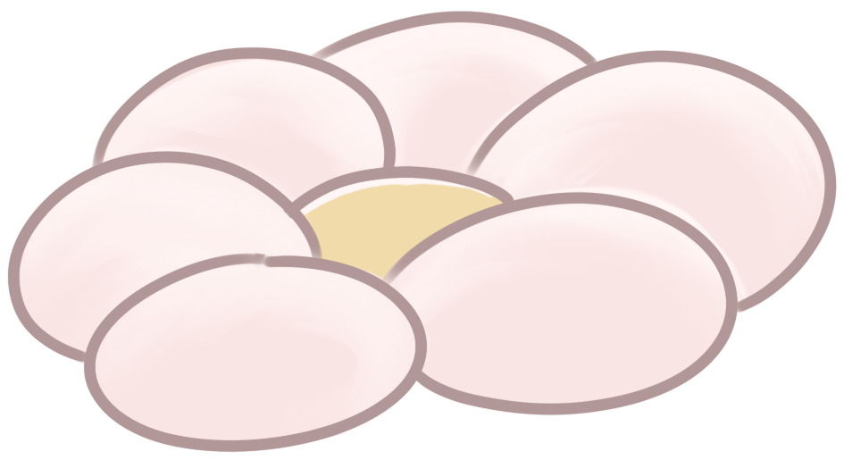
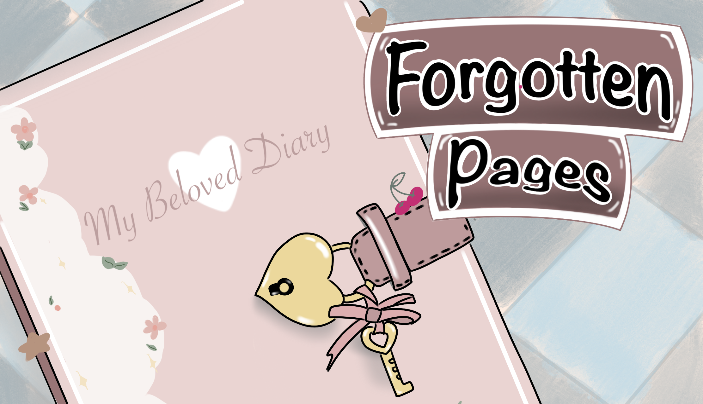
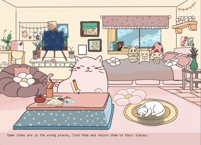

✦ Live Space
✦ Jeon Stack
✦ Seoul Festival Analytics
✦ RoadCoach
✦
Forgotten Pages
Turns the feeling of piecing together a lost memory into an interaction
4 weeks project (2025)
Description
Set in a quiet bedroom frozen in time, the experience guides a player through recovering a forgotten diary password through spatial exploration and object placement.
Every item in the room is a memory token. Every token returned to its rightful place unlocks a fragment of something lost.


What I BuiltDeveloped the project end-to-end in an OOP framework, from system architecture to the final playable build

Constructed the full bedroom environment as an interactive space where every object serves a functional and narrative role